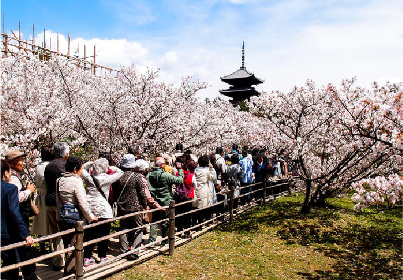

熱門景點
機場交通
必備知識
天氣資訊
京阪特色
熱門景點
第一次到京阪自由行，哪些風景區、商店街、排隊美食、遊樂園
一定要去的呢？以下五個必吃、必玩、必逛的景點，千萬不要錯過！
大阪
大阪城
天守閣
黑門
市場
環球
影城
心齋橋
道頓崛
京都
伏見
稻荷
祉園
竹林
小徑
清水寺
機場交通
還在煩惱出關後怎麼前往京阪市區？要搭哪種交通工具好？
我們幫您規劃了三種關西當地的大眾運輸，以最快的速度抵達市區，
節省拉車時間，同時可以體驗最道地的日本交通方式。
以下三種交通設施，出境後在機場內跟著指示牌走，就可以抵達囉！
關西機場介紹
機場往京阪
南海電鐵
JR-西日本
機場巴士
往大阪(難波)
rapi;t
空港急行
往大阪/京都
Haruka特急
關空快速
往大阪/京都
KIX機場巴士
必備知識
來到京阪旅遊，玩得盡興是一定要的。
到了不同國家，除了體驗當地文化，日本有哪些文化是到日本旅遊時要注意的呢？
記下這些小知識，玩得開心之外，也要當個有禮貌的觀光客唷！
公共場合禁菸
吸菸區才可吸菸
日本雖然吸菸風氣很盛，但是
對於吸煙區的規定可是非常嚴
格的，在公共場所如車站、機
場、地鐵與醫院，都只能在專
用吸煙區裡吸菸，隨便吸菸可
是會受罰的喔！
使用手機
請注意相關禮儀
日本對於手機使用也有相關規
定，特別是公共場合/地鐵，
通常是不會使用手機的。 如果要使用手機則必須放低音量，簡短對話後盡快掛斷。 而高級餐廳、醫院和電影院更
不用說，要講電話還是到開放
空間再說吧！
拍照禮儀
請注意他人隱私
日本人非常重視人際之間的距
離感，也相當注重隱私與肖像
權。 若是你到各大名勝，不可以隨便拍攝別人，包含小孩。 若想合照須先經過別人同意。
請注意：看到「藝伎」也請不
要太興奮，拍攝或隨意碰觸都
不可以喔！
關西地區
搭乘自動扶梯請靠右
習慣搭乘捷運的人一定知道這
個規定，搭乘手扶梯時靠右，
這規則在日本也是存在的喔！
關西大阪地區則習慣站在右側
天氣資訊
日本國土以亞熱帶氣候為主。一年四季溫差大，四季分明。
關西地區夏季最熱可達30度，冬季最冷可到3、4度。
出門前記得先注意氣溫，攜帶適合的服裝。
夏季5、6月是梅雨季，記得攜帶雨具！
春
夏
秋
冬
京阪特色
除了熱門景點一定要去之外，
京都大阪還有很多特別的季節、特別的活動等著你來體驗喔！
櫻花季

賞櫻季節
3月下旬4月上旬
最佳賞櫻地點
京都
高台寺
清水寺
仁和寺
圓山公園
嵐山小火車
大阪
大阪城公園
楓葉季
賞楓季節
11月中下旬
最佳賞楓地點
京都
東福寺
永觀堂
清水寺
仙洞寓所
嵐山小火車